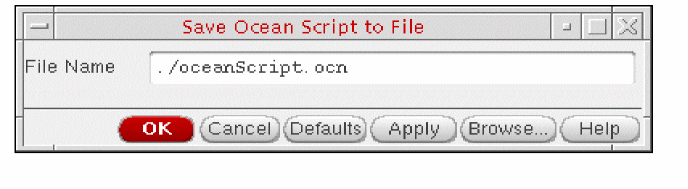
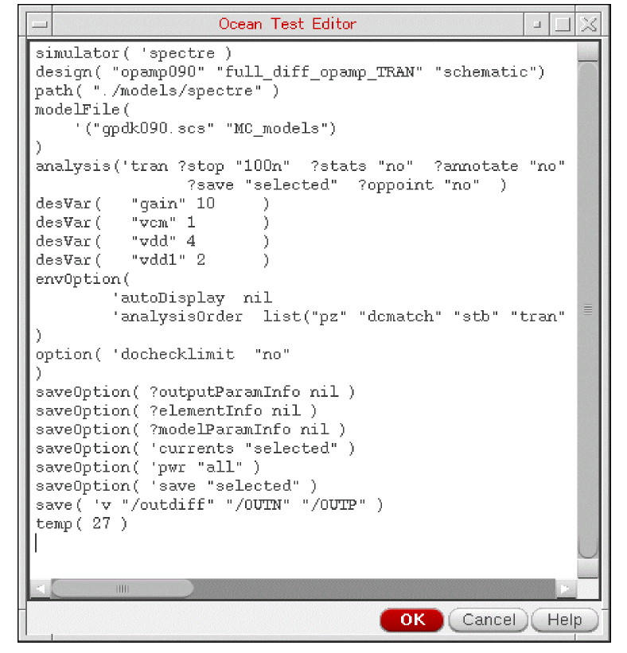

1
Introduction to OCEAN XL Commands
OCEAN XL commands let you simulate and analyze your design in Virtuoso® Analog Design Environment XL. In this chapter, you can find information about creating and running OCEAN XL scripts.
Creating and Running an OCEAN XL Script
You can create and run an
For more details, refer to the following sections:
- Creating an OCEAN XL Script
- Modifying an OCEAN XL Script
- Running an OCEAN Script
- Running Parallel OCEAN XL Simulation Runs for an ADE XL View
- Viewing Results of Simulations Run using OCEAN XL Scripts
Creating an OCEAN XL Script
You can create an OCEAN XL script in any of the following three ways:
- Saving the ADE XL Setup to an OCEAN XL Script
- Scripting an OCEAN XL Script
- Creating OCEAN XL Scripts with Netlist Specified as a Design
Saving the ADE XL Setup to an OCEAN XL Script
You can create a simulation setup in ADE XL user interface and save it as an OCEAN XL script. For this, after the simulation setup is complete, do the following:
-
In the main session window, choose File – Save Script.
The Save OCEAN Script form appears.
 -
In the File Name field, type a name and location for your OCEAN XL script file.
-
Click OK.
The program saves simulation setup and conditions to the specified OCEAN XL script file.
Scripting an OCEAN XL Script
You can use a text editor to create an OCEAN XL script by using OCEAN XL commands and save it in a .ocn file.
Creating OCEAN XL Scripts with Netlist Specified as a Design
If you have an already generated netlist of a design, you can provide the path to that netlist file to the design OCEAN XL command. By doing this, you can run a simulation without loading/ requiring the complete design hierarchy. Later, you can view the simulation results in ADE XL user interface. For more details, refer to Viewing Results of Simulations Run using OCEAN XL Scripts.
Modifying an OCEAN XL Script
If you
-
In the History tab of the Data View assistant pane, right-click the history item for the OCEAN XL run and choose Load Setup to Active.
-
Modify the setup as required.
You can modify the setup using the ADE XL user interface (such as adding or modifying global variables or corners using the Data View assistant pane), or use the OCEAN Test Editor form to modify the setup.
To use the OCEAN Test Editor form, do the following:-
Right-click the test name in the Tests tree in the Data tab of Data View assistant pane and choose Open Test Editor.
The OCEAN Test Editor form appears in which the OCEAN commands saved in the script are displayed.The OCEAN Test Editor form is a text editor specified by using theeditorSKILL variable, or the$VISUALor$EDITORvariables in the.cshrcfile, in the given order of preference. - Change the simulation setup by modifying the commands.
-
Click OK to save the changes in the script.
-
Right-click the test name in the Tests tree in the Data tab of Data View assistant pane and choose Open Test Editor.
Running an OCEAN Script
To run simulations using OCEAN scripts, perform any one of the following steps:
-
In CIW, run the following command:
load("<name-of-OCEAN-script-file>")
- In ADE XL user interface, load the set up from history of a previous OCEAN run and click Run Simulation on the Run toolbar to start the simulation.
-
In a UNIX shell, type the following commands:
ocean
load("<name-of-OCEAN-script-file>")
For information about running an OCEAN script from a UNIX shell, see the OCEAN Reference.
When you run a simulation using an OCEAN script, a history item named Ocean.n is created for the run. You can then start ADE XL, and use the ADE XL user interface to
When you
- Sweep parameters and their values
- Number of tests, sweep points, and corners
- Points completed and job status information
-
Results location to the output area of the CIW
For example:1/1 completed. *Info* The result of this OCEAN XL run are saved in "Interactive.3" in library "rfExamples", cell "ne600", view "adexl".
The results location corresponds to the lib/cell/view specified in the ocnxlTargetCellView call, such asocnxlTargetCellView( "rfExamples" "ne600" "adexl")
You can run an OCEAN script using LSF, for example, by submitting the job remotely using thebsubcommand (for the LSF example) as follows:bsub ocean -nograph
OCEANscriptFileName
Also see:
Running Parallel OCEAN XL Simulation Runs for an ADE XL View
In OCEAN XL, you can simultaneously run multiple simulation runs for an ADE XL view. You can do this by executing multiple ocnxlRun functions in parallel from the same OCEAN XL script. The results of all the runs are saved in the results database of that ADE XL view.
This section describes how to prepare setup and run parallel simulation runs in OCEAN XL.
Preparing Setup for Parallel Simulation Runs
You can enable the parallel run option for your OCEAN XL scripts in any of the following ways:
- To enable the parallel run, before saving an OCEAN XL script from an ADE XL view, select the Parallel option in the Run Options form.
- Use the ocnxlSetRunDistributeOptions command in the OCEAN XL script to set the parallel run option.
Running Parallel Simulation Runs
In your OCEAN script, ensure that the waitUntilDone argument of the ocnxlRun function is set to nil.
For example, if you have saved an ADE XL state, Ac_State1, and want to run a simulation for it parallel to other runs in your OCEAN XL script, use the following commands:
ocnxlLoadSetupState( "AC_State1" 'retain ?tests t ?vars t ?parameters t ?currentMode t ?runOptions t ?specs t ?corners t ?extensions t ?modelGroups nil ?relxanalysis nil )
runid1 = ocnxlRun(?waitUntilDone nil)
ocnxlLoadSetupState( "Tran_State2" 'retain ?tests t ?vars t ?parameters t ?currentMode t ?runOptions t ?specs t ?corners t ?extensions t ?modelGroups nil ?relxanalysis nil )
runid2 = ocnxlRun(?waitUntilDone nil)
When the waitUntilDone argument is set to nil, OCEAN XL does not wait for the run to complete. Instead, while the run is in progress, it executes the next line in the script. In the example given above, OCEAN XL loads another state, Tran_State2, and starts a simulation for that without waiting for the first simulation run to finish.
t.
When you set the waitUntilDone argument to nil, the ocnxlRun function also returns a run ID for each run. You can use this run ID later to either wait for that run to complete at a later stage or to access the history results of that run.
For example, before printing results, if you want to wait for a particular OCEAN XL run to complete simulations, you can use the following statement in your script:
(ocnxlWaitUntilDone rinid2)
(ocnxlOutputSummary ?forRun runid1 ?detailed nil)
; The previous command displays run summary for the simulation run with run ID as runid1
After a run is complete, you can get access to its results by using its run ID, as shown in the following statement:
h1 = ocnxlGetHistory(runid1)
You can use this handle to get results for the given OCEAN XL run.
For details on the related OCEAN XL functions and their examples, refer to the following sections in the OCEAN Reference Guide:
- ocnxlRun
- ocnxlOutputSummary
- ocnxlWaitUntilDone
- ocnxlGetHistory
- ocnxlSetRunDistributeOptions
- ocnxlGetRunDistributeOptions
Viewing Results of Simulations Run using OCEAN XL Scripts
The results of simulations run from OCEAN XL scripts are saved in the results database of the ADE XL view. While the OCEAN XL simulations are in progress or after they are complete, you can view these results in the ADE XL user interface.
To view the results for an OCEAN XL simulation run in the ADE XL user interface, do the following:
- In the History tab of the Data View assistant pane, right-click the history item for the OCEAN run and choose View Results.
VT calculator function to select a net on schematic or you cannot use the direct plotting feature. Therefore, when you right-click data in the Results tab, some of the commands that require use of the schematic view are not enabled.Return to top